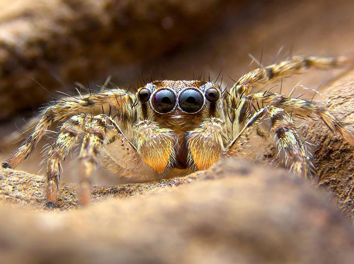
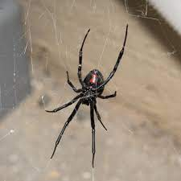
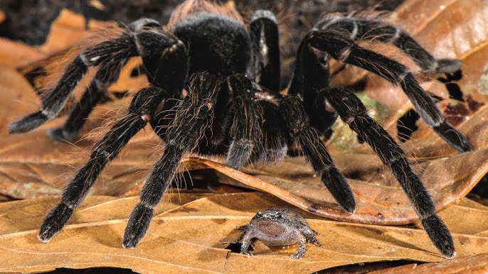
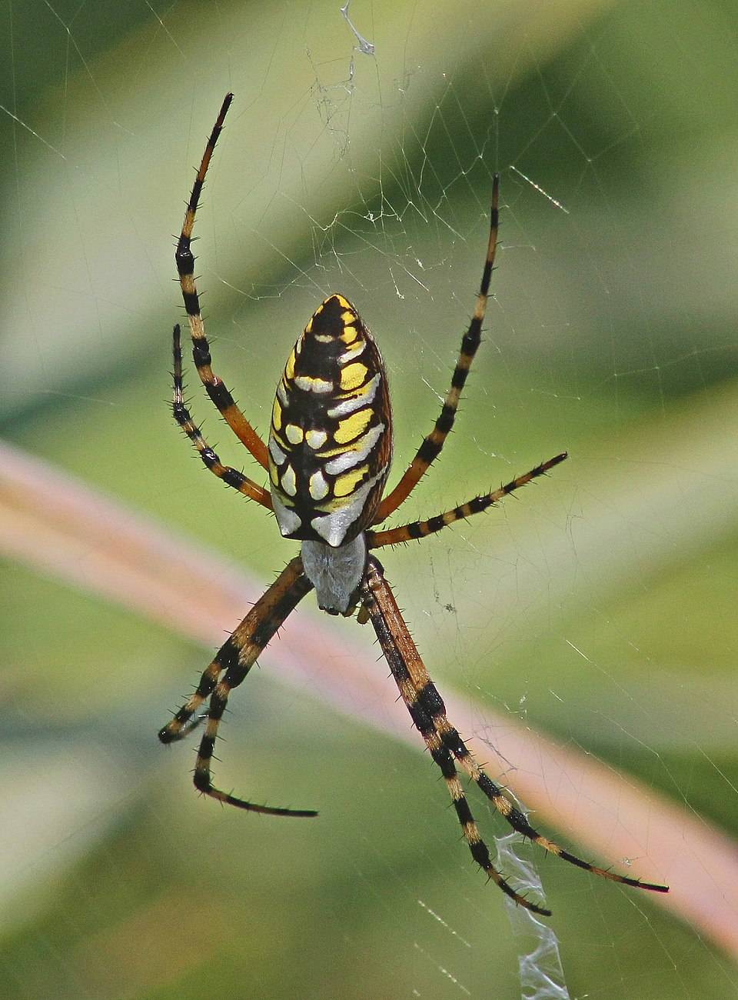

Spiders




This page will talk about spiders and thing to know about other spiders. First of all a spider behavior range from solitary and reclusive to social and aggressive. This aggressiveness is sometimes found when a human gets too close to there eggs they will bite and hurt them in order to protect there eggs. Some other reasons that they may become aggressive is by natural life cycle, predatory instinct, and climate change these are some factors that may cause a spider to become more aggressive. Some of the spiders habitat is in deserts, forests, wetlands, and grasslands, as well as in humans homes. There ecological role is acting as both predators and prey. There life span is about one to two years